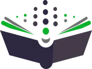

Buscando el versículo del día.
Reflexión
Preparando la reflexión.
Lectura diaria integrada en la aplicación

Una compañía para tu día, estés donde estés.
Disfruta las más hermosas alabanzas y contenidos que exaltan el nombre del Señor Jesús. Gracias por acompañarnos y hacer parte de esta comunidad.
Agrega En Sintonía con Jesús a la pantalla de inicio de tu teléfono. La instalación es gratuita y no requiere App Store ni archivo IPA.
Sonando al corazón de Dios
La señal se conecta únicamente cuando pulsas reproducir. El audio requiere conexión a internet. En iPhone, el volumen también puede depender de los controles físicos del dispositivo.
Invita a otras personas a escuchar En Sintonía con Jesús.
Compartir aplicación ↗Lectura bíblica con una breve reflexión cristiana para fortalecer tu día.
Buscando el versículo del día.
Preparando la reflexión.
Lectura diaria integrada en la aplicación
Envía el versículo y su reflexión a tus familiares y amigos desde WhatsApp o cualquier aplicación disponible en tu dispositivo.
Tu contribución nos permite seguir creando contenido de calidad y creciendo juntos.
Tus donaciones son un apoyo valioso y una bendición para nuestro ministerio radial. Oramos para que el Señor Jesús bendiga y multiplique cada aporte.
Gracias por creer en este proyecto. Con tu aporte nos ayudas a seguir informando, edificando, entreteniendo sanamente y conectando a más personas. No importa el monto: cada donación cuenta y hace una gran diferencia.
Publicaciones y noticias de En Sintonía con Jesús.
Consultando las publicaciones del blog…
Esta versión web consulta las novedades cuando abres la sección. No envía notificaciones automáticas. Los avisos silenciosos de Blogger continúan disponibles en la aplicación Android.
Encuentra nuestros canales oficiales y conoce cómo funciona esta aplicación.
Sin publicidad: esta aplicación web no incorpora anuncios ni redes publicitarias.
Radio en vivo: al reproducir, el dispositivo se conecta por HTTPS a Zeno.fm. El proveedor recibe datos técnicos de conexión, incluida la dirección IP, y sus estadísticas pueden estimar una ubicación geográfica aproximada. Esta PWA no solicita GPS ni obtiene coordenadas.
Blogger: al abrir Novedades se consulta el feed público del blog. No se recopilan credenciales ni se inicia sesión.
Datos del dispositivo: no solicitamos contactos, cámara, micrófono ni ubicación. Los enlaces externos se abren en los servicios de sus respectivos proveedores.